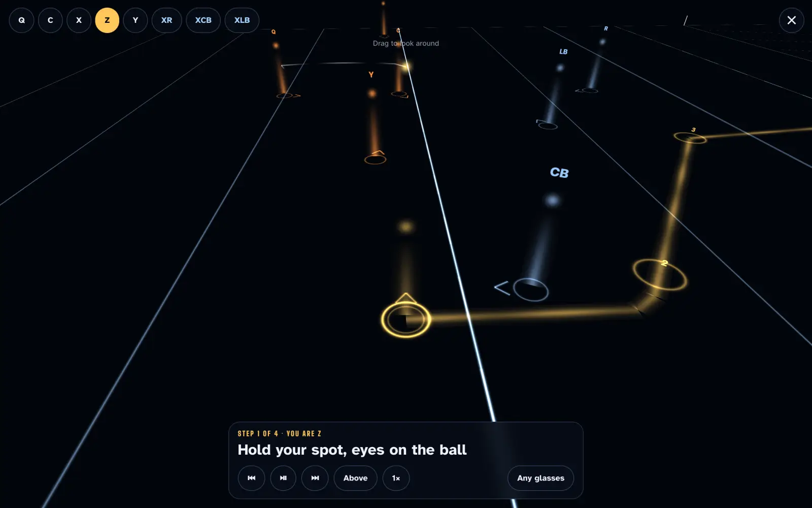
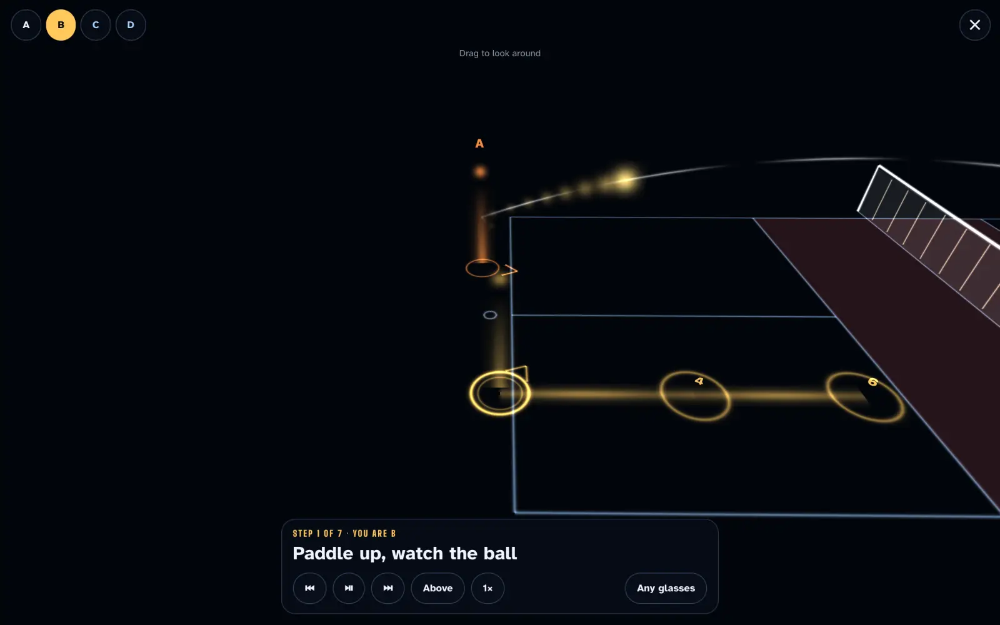
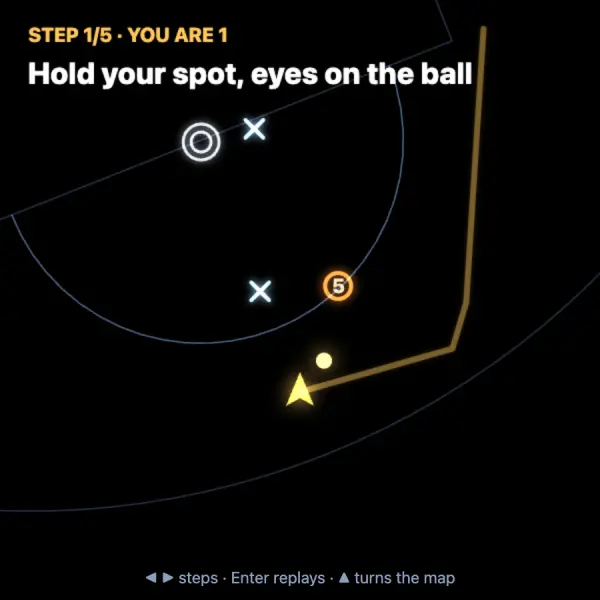
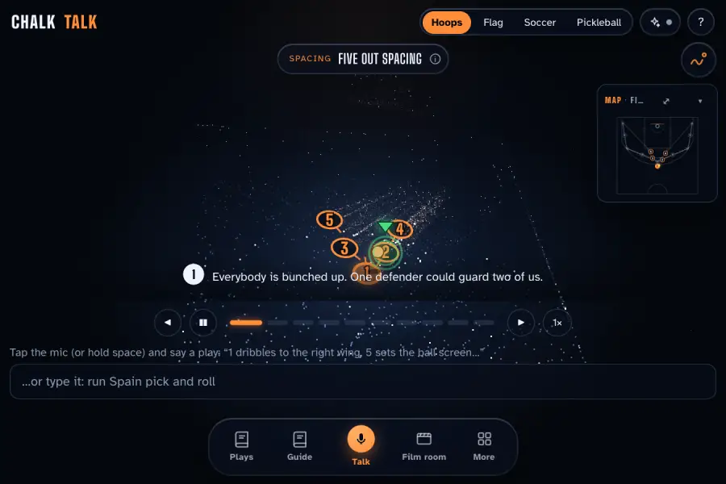
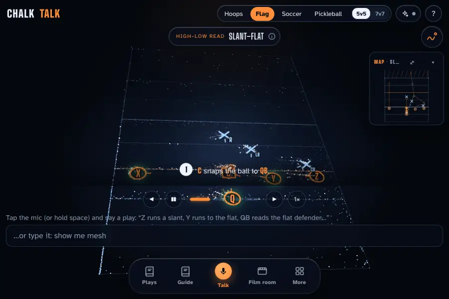
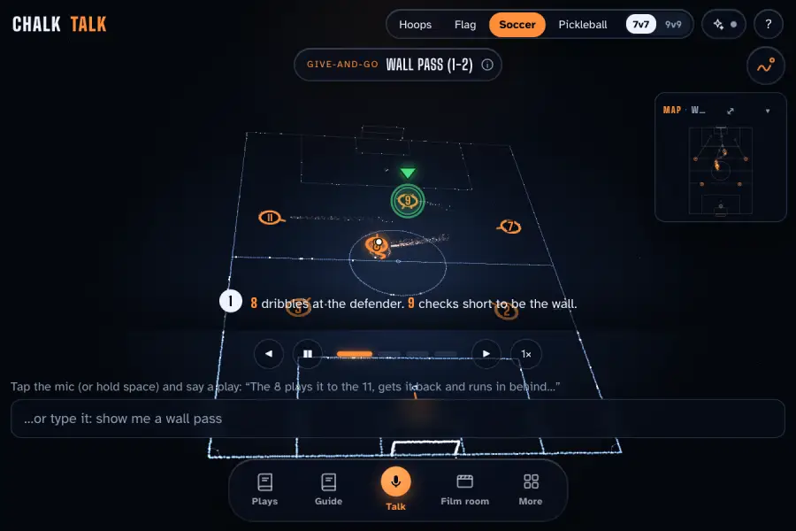
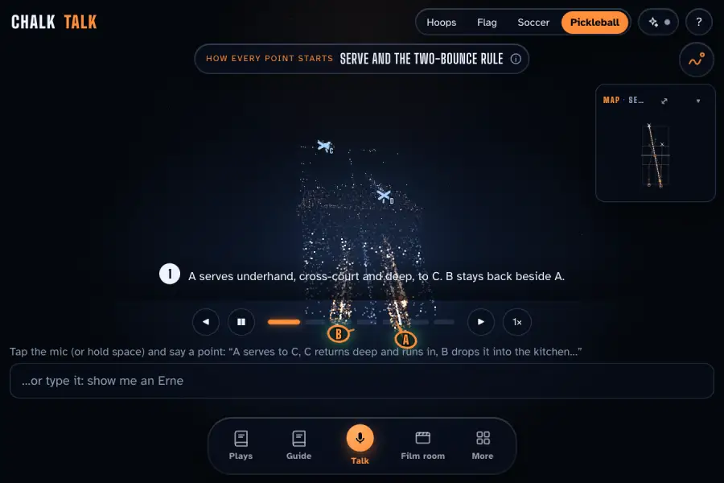

Public beta · phone, iPhone Duo, iPad, glasses
Say the play.
Watch it draw.
Say it out loud or sketch it, and Chalk Talk draws it in light: every player moving, every read explained. Then put on glasses and walk your own path.
Free. No account. Installs from your browser in two taps; updates arrive by themselves.

On a computer?Point your phone's camera here to get it there.
Open it like a playbook.
It opens like one.
Chalk Talk lays itself out from where the fold is, never the hinge angle: the play on one page, the player you tapped on the other. Fold it, flatten it, stand it on the bench, and nothing jumps.
-
Closed
A clipboard in one hand.
The outer screen is a phone: the board up top, the plays a thumb away.
-
Open
The play on one page. The player on the other.
Tap a player and their card fills the second page: their job, their read, every step.
-
Tabletop
Stand it on the bench.
The board above the fold for the huddle to see, the player card below for your thumb.
-
 Book
BookHeld like a playbook.
Half open or flat, the layout is the same. Step through the play, or turn to the next player, without closing a thing.
Laid out from the Duo's screen and fold as the simulator reports them; we haven't held one yet. Tell us how it sits on yours.
Talk like a coach.
It draws like one.
Describe a play the way you'd say it in a timeout, or drag the players with your finger. The defense guards on its own, and every player knows their read.
- VoiceSay it. It's drawn in seconds.
- SketchDraw a route; the AI names the concept.
- ReadsTap anyone for their job, their read, their steps.
- Kids viewBigger, simpler, for the little ones.
Pick your spot.
Walk your path.
Trace draws your route in gold on the floor around you, the ball's real flight, and where to be next. It's all light, so on see-through glasses the black simply isn't there.

On a real court
Stand on your spot, pinch, and the play locks to the real lines around you.
Built for Snap Spectacles, Quest, Vision Pro, Android XR
Tabletop or room
The whole play as a hologram on a table, or shrunk to fit your living room.
Any WebXR headset
Through your phone
Hold it up: the light over the camera, and you look around by moving the phone.
iPhone and Android, no headset
Ray-Ban Display
A radar in the corner of your eye, driven by the wristband's swipes.
mutaafaziz.com/chalktalk/glasses-
Earbuds
Phone in your pocket: every step said out loud, a ping from where you're going. Tap to pause.
Ray-Ban Meta, AirPods, any earbuds Display glasses, in 3D
Plug in, go full screen: black is clear, and side by side gives each eye its own view.
XREAL, VITURE, RayNeo, Rokid
Send any play to a headset with a four-digit code at mutaafaziz.com/chalktalk/go. The headset modes are built to each device's published specs; we've tested them on screens, not yet on every pair.
One board.
Every season.




Made for the volunteer
with a whistle.
Free to coachNo account, no card. Bring your own AI key if you want the big models.
Names sent anywhereYour players' names stay on your device. The AI only ever sees X's and O's.
Sports, and countingEach one a pack of plays, positions and reads, with more on the way.
Two taps.
Then coach.
- Open this page on your phone or tablet. On a computer, scan the code.
- Tap Get the beta. On iPhone: Share, then Add to Home Screen.
- Coach from your home screen. The library plays work offline at the gym, and new builds arrive by themselves.
Say the play.
Walk the play.
On a computer?Point your phone's camera here.